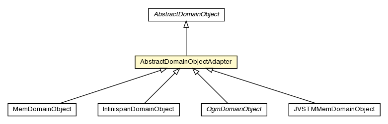

pt.ist.fenixframework.core
Class AbstractDomainObjectAdapter

java.lang.Object
 pt.ist.fenixframework.core.AbstractDomainObject
pt.ist.fenixframework.core.AbstractDomainObjectAdapter
pt.ist.fenixframework.core.AbstractDomainObject
pt.ist.fenixframework.core.AbstractDomainObjectAdapter
- All Implemented Interfaces:
- Serializable, DomainObject
- Direct Known Subclasses:
- InfinispanDomainObject, JVSTMMemDomainObject, MemDomainObject, OgmDomainObject
public class AbstractDomainObjectAdapter
- extends AbstractDomainObject
This class contains useful code, required by concrete DomainObjects. Backend
implementations may benefit from the code in this class when providing their own implementations
of DomainObject.
- See Also:
- Serialized Form
AbstractDomainObjectAdapter
protected AbstractDomainObjectAdapter()
AbstractDomainObjectAdapter
protected AbstractDomainObjectAdapter(DomainObjectAllocator.OID oid)
makeSerializedForm
protected AbstractDomainObjectAdapter.SerializedForm makeSerializedForm()
- Description copied from class:
AbstractDomainObject
- Creates the concrete instance of SerializedForm for this DomainObject. This method is
invoked when serialization of the DomainObject occurs. Final users of this framework should
never invoke this method explicitly. Backend developers should provide an implementation for
this method in their subclasses of AbstractDomainObject.
- Overrides:
makeSerializedForm in class AbstractDomainObject
- Returns:
- The corresponding SerializedForm
Copyright © 2013. All Rights Reserved.